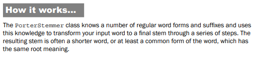
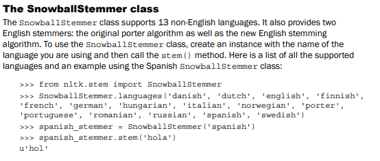
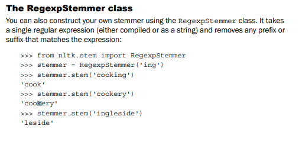
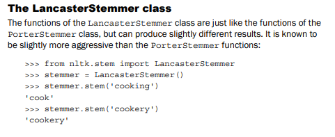

Stemming words
Stemming is a technique to remove affixes from a word, ending up with the stem. For
example, the stem of cooking is cook, and a good stemming algorithm knows that the ing
suffix can be removed. Stemming is most commonly used by search engines for indexing
words. Instead of storing all forms of a word, a search engine can store only the stems, greatly
reducing the size of index while increasing retrieval accuracy.
One of the most common stemming algorithms is the Porter stemming algorithm by Martin
Porter. It is designed to remove and replace well-known suffixes of English words, and its
usage in NLTK will be covered in the next section.




